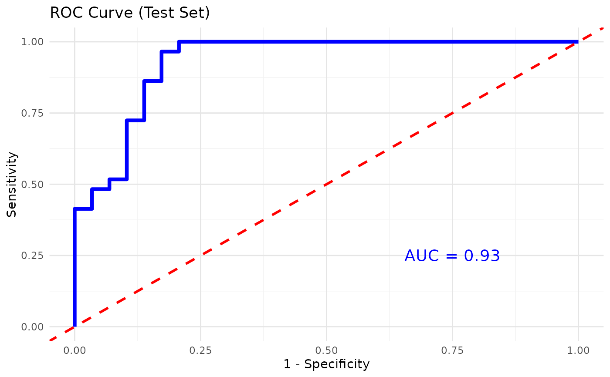
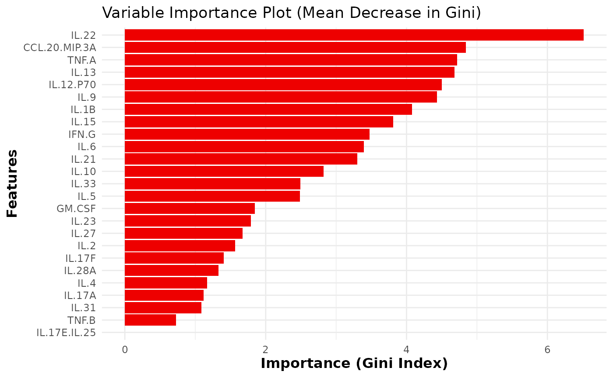

This function trains and evaluates a Random Forest classification model on cytokine data. It includes feature importance visualization, cross- validation for feature selection, and performance metrics such as accuracy, sensitivity, and specificity. Optionally, for binary classification, the function also plots the ROC curve and computes the AUC.
Usage
cyt_rf(
data,
group_col,
ntree = 500,
mtry = 5,
train_fraction = 0.7,
plot_roc = FALSE,
k_folds = 5,
step = 0.5,
run_rfcv = TRUE,
verbose = FALSE,
seed = 123
)Arguments
- data
A data frame containing the cytokine data, with one column as the grouping variable and the rest as numerical features.
- group_col
A string representing the name of the column with the grouping variable (the target variable for classification).
- ntree
An integer specifying the number of trees to grow in the forest (default is 500).
- mtry
An integer specifying the number of variables randomly selected at each split (default is 5).
- train_fraction
A numeric value between 0 and 1 representing the proportion of data to use for training (default is 0.7).
- plot_roc
A logical value indicating whether to plot the ROC curve and compute the AUC for binary classification (default is FALSE).
- k_folds
An integer specifying the number of folds for cross-validation (default is 5).
- step
A numeric value specifying the fraction of variables to remove at each step during cross-validation for feature selection (default is 0.5).
- run_rfcv
A logical value indicating whether to run Random Forest cross-validation for feature selection (default is TRUE).
- verbose
A logical value indicating whether to print additional informational output to the console. When
TRUE, the function will display progress messages, intermediate results, and plots; whenFALSE(the default), it runs quietly.- seed
An integer specifying the seed for reproducibility (default is 123).
Value
A list containing:
- model
The trained Random Forest model.
- confusion_matrix
The confusion matrix of the test set predictions.
- importance_plot
A ggplot object showing the variable importance plot based on Mean Decrease Gini.
- rfcv_result
Results from Random Forest cross-validation for feature selection (if
run_rfcvis TRUE).- importance_data
A data frame containing the variable importance based on the Gini index.
Details
The function fits a Random Forest model to the provided data by splitting it
into training and test sets. It calculates performance metrics such as
accuracy, sensitivity, and specificity for both sets. For binary
classification, it can also plot the ROC curve and compute the AUC. If
run_rfcv is TRUE, cross-validation is performed to select the optimal
number of features.
If verbose is TRUE, the function prints additional information to the
console, including training results, test results, and plots.
Examples
data.df0 <- ExampleData1
data.df <- data.frame(data.df0[, 1:3], log2(data.df0[, -c(1:3)]))
data.df <- data.df[, -c(2:3)]
data.df <- dplyr::filter(data.df, Group != "ND")
# Storing results in an object
rf_results <- cyt_rf(
data = data.df, group_col = "Group", k_folds = 5, ntree = 1000,
mtry = 4, run_rfcv = TRUE, plot_roc = TRUE, verbose = FALSE
)
# Extracting Results and plots
rf_results$model # Extracts the training model
#>
#> Call:
#> randomForest(formula = formula_rf, data = train_data, ntree = ntree, mtry = mtry, importance = TRUE, do.trace = FALSE)
#> Type of random forest: classification
#> Number of trees: 1000
#> No. of variables tried at each split: 4
#>
#> OOB estimate of error rate: 11.43%
#> Confusion matrix:
#> PreT2D T2D class.error
#> PreT2D 62 8 0.1142857
#> T2D 8 62 0.1142857
rf_results$confusion_matrix # Extracts the confusion matrix from testing set
#> Confusion Matrix and Statistics
#>
#> Reference
#> Prediction PreT2D T2D
#> PreT2D 25 7
#> T2D 4 22
#>
#> Accuracy : 0.8103
#> 95% CI : (0.6859, 0.9013)
#> No Information Rate : 0.5
#> P-Value [Acc > NIR] : 1.016e-06
#>
#> Kappa : 0.6207
#>
#> Mcnemar's Test P-Value : 0.5465
#>
#> Sensitivity : 0.8621
#> Specificity : 0.7586
#> Pos Pred Value : 0.7812
#> Neg Pred Value : 0.8462
#> Prevalence : 0.5000
#> Detection Rate : 0.4310
#> Detection Prevalence : 0.5517
#> Balanced Accuracy : 0.8103
#>
#> 'Positive' Class : PreT2D
#>
rf_results$importance_plot # Extracts the variable importance plot

rf_results$rfcv_plot# Extracts the cross-validation plot.
